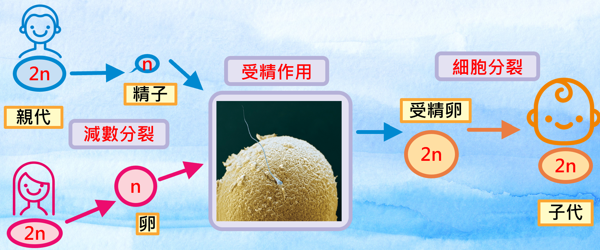

生物的生殖方式常分成 無性生殖 與 有性生殖： 無性生殖 常可直接靠 細胞分裂 產生新個體； 有性生殖 則需要 配子（例如 精子 與 卵）結合來產生新個體。
對於行 有性生殖 的生物而言，配子 的形成必須經過 減數分裂，這樣世代相傳時，子代細胞內的 染色體數目 才能維持一定。

減數分裂 是一種讓細胞內 染色體數目減半 的分裂過程。 在概念上，可以記成： 染色體先複製一次，接著 細胞分裂兩次， 最後由 1個母細胞 形成 4個子細胞，而每個子細胞的染色體數目是原來的一半。
減數分裂時，染色體會「隨機分配」到新的細胞內，所以不同配子的染色體組合可能不一樣。
減數分裂以「2對染色體」為例，可以想成以下流程： 先有成對的 同源染色體，分裂前 複製一次， 第一次分裂讓 同源染色體分離， 第二次分裂讓 複製染色體分離， 最後形成四個子細胞，染色體數目減半。
減數分裂產生的 生殖細胞（配子）的染色體數目是 體細胞的一半， 只含每對 同源染色體 的其中一條，因此是 單套（n）。 當精子與卵結合形成 受精卵 後，染色體數目恢復為 雙套（2n）。
把概念搬到「數量」問題：n / 2n。